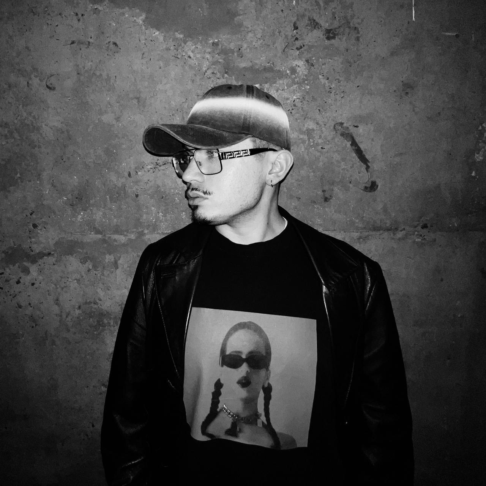
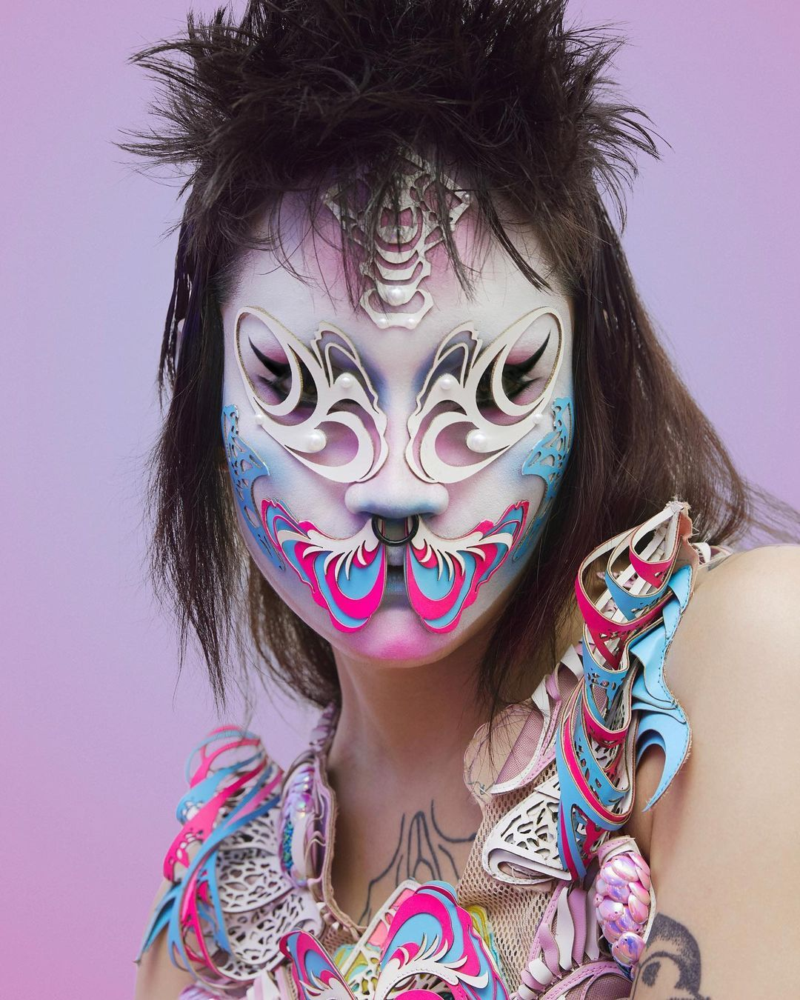

Work — Experimentos y trabajos
Matías Pezoa
Diseño, moda, tecnología y fabricación digital.

01 02
Registro 001
Work
- 11 Cuerpo base Patrón de moda paramétrico: delantero y espalda desde tus medidas, exportable a DXF.
- 10 Lo que queda Prototipo de desgaste por mirada, con ESP32.
- 09 Pattern Key Chroma key basado en patrones textiles, para estudiantes de diseño de moda.
- 08 Análisis de sesiones Análisis verbal y no verbal de una sesión grabada, en el navegador.
- 07 Plataforma paramétrica textil Herramienta de fabricación digital textil paramétrica.
- 06 Deformación afectiva · Decart Desnaturalización IA con restyle de video en vivo.
- 05 Prueba · Decart Restyle de video en vivo.
- 04 Desnaturalización IA Prototipo de baja resolución — Exercise 03.
- 03 VRTG Scent Atlas morfológico 3D de perfumes a partir de datos reales — Exercise 02.
- 02 VRTG · Lab 02 Espacio de diseño paramétrico — Clase 02.
- 01 VRTG Espacio de diseño paramétrico — Exercise 01.
Registro 002
Perfil
- Disciplina / formación
- Diseño Industrial + Magíster en Ciencias del Diseño.
- Qué hago hoy
- Trabajo como diseñador y docente universitario, especializado en la intersección entre moda, tecnología y fabricación digital. Desarrollo proyectos que integran diseño, procesos de fabricación y herramientas computacionales aplicadas al cuerpo y al vestuario.
- Qué estoy explorando
- Cómo utilizar sistemas digitales y computacionales para expandir los procesos de diseño de moda, conectando cuerpo, geometría, materialidad, fabricación e interacción.
Registro 003
Intereses
Registro 004
Pregunta de investigación
Hipótesis de trabajo —
¿Cómo puede el diseño computacional transformar la relación entre cuerpo, material y fabricación para generar nuevas formas de diseñar y producir indumentaria?
Registro 005
Referencia
Los proyectos donde la tecnología no funciona únicamente como una herramienta para fabricar una forma previamente diseñada, sino como parte activa del proceso de diseño, permitiendo que el cuerpo, los materiales, los datos y los sistemas de fabricación participen en la generación del resultado.

03
Registro 006
Modelo 3D
Registro 007
Contacto